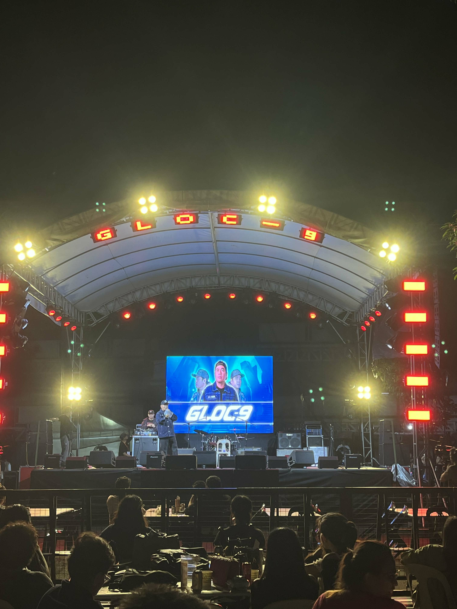
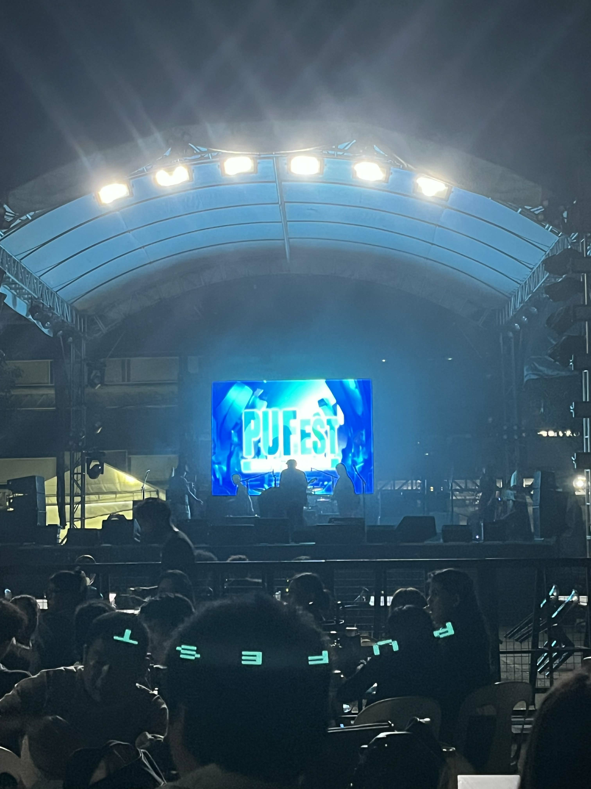
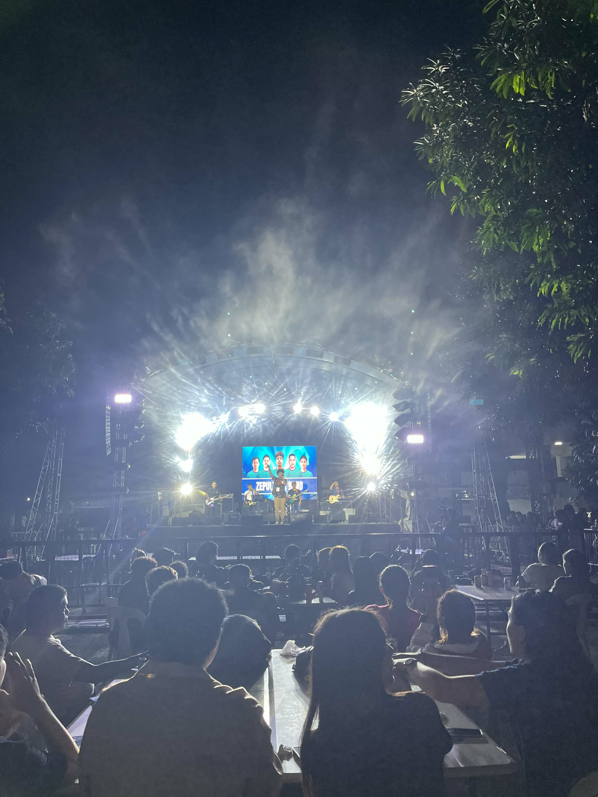
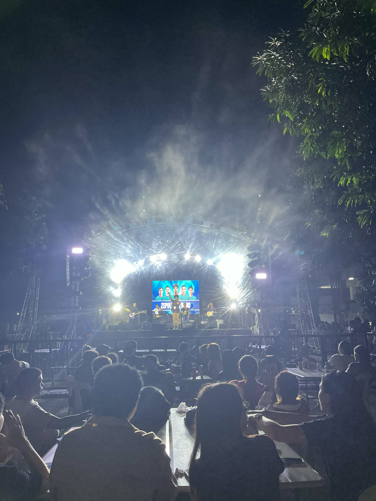
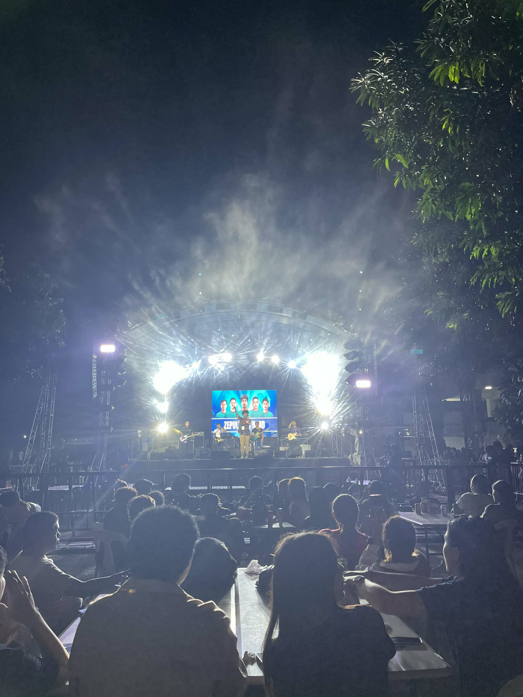

Celebrating Unity, Talent, and Joy at Panpacific University
The Panpacific University Festival & Student Day is a celebration of culture, creativity, and student excellence filled with performances, booths, games, and music that bring our community together.
This year’s event featured outstanding guest performers such as Gloc-9, the rock band Sepultura, and the energetic beats of DJ Ixia Española making the festival truly unforgettable.
🎥 Event Highlights
All videos were captured personally by me, showcasing the lively atmosphere, performances, and moments of togetherness during the Panpacific University Festival & Student Day 2025.
📸 Photo Gallery



The gallery features amazing moments from Gloc-9’s rap performance, Sepultura’s rock act, DJ Ixia Española’s beats, and students celebrating unity and pride as Panpacificans.
 
